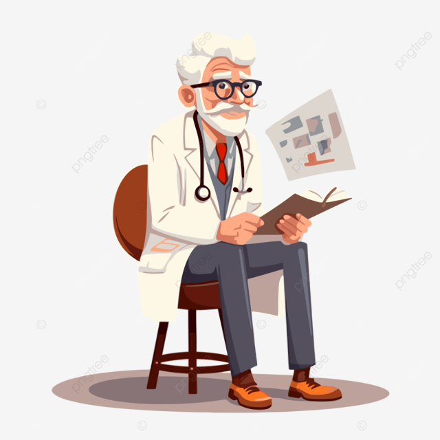

<ion-content class="home-bg">
  <!-- Animation Neural -->
  <canvas #neuralCanvas class="neural-canvas"></canvas>

  <!-- Logo Animation -->
  <div class="logo-animation">
    
  </div>

  <!-- Hero Section -->
  <div class="hero-section">
    <div class="ai-avatar"></div>
    <h1>Empath AI</h1>
    <p>🤍 Your safe space to talk & heal</p>

    <!-- Mood -->
    <div class="mood-indicator happy"></div>

    <!-- Stress -->
    <div class="stress-bar">
      <span></span>
    </div>
  </div>
     <!-- <div #lottieContainer id="lottie-container" class="lottie-hero"></div> -->


</ion-content>

<!-- tabs.page.html -->
<ion-tabs>

  <ion-tab-bar slot="bottom" class="custom-tab-bar">

    <ion-tab-button tab="settings" class="tab-btn" [routerLink]="['/setting']">
      <ion-icon name="settings-outline"></ion-icon>
      <ion-label>الإعدادات</ion-label>
    </ion-tab-button>

    <ion-tab-button tab="profile" class="tab-btn" [routerLink]="['/profile']">
      <ion-icon name="person-outline"></ion-icon>
      <ion-label>الملف</ion-label>
    </ion-tab-button>

    <!-- FAB center button -->
    <ion-tab-button tab="chat" class="tab-btn fab-tab" [routerLink]="['/chatbot']">
      <div class="fab-btn">
        <ion-icon name="chatbubble-outline"></ion-icon>
      </div>
    </ion-tab-button>

    <ion-tab-button tab="history" class="tab-btn" [routerLink]="['/history']">
      <ion-icon name="time-outline"></ion-icon>
      <ion-label>السجل</ion-label>
    </ion-tab-button>

    <ion-tab-button tab="home" class="tab-btn">
      <ion-icon name="home-outline"></ion-icon>
      <ion-label>الرئيسية</ion-label>
    </ion-tab-button>

  </ion-tab-bar>

</ion-tabs>
